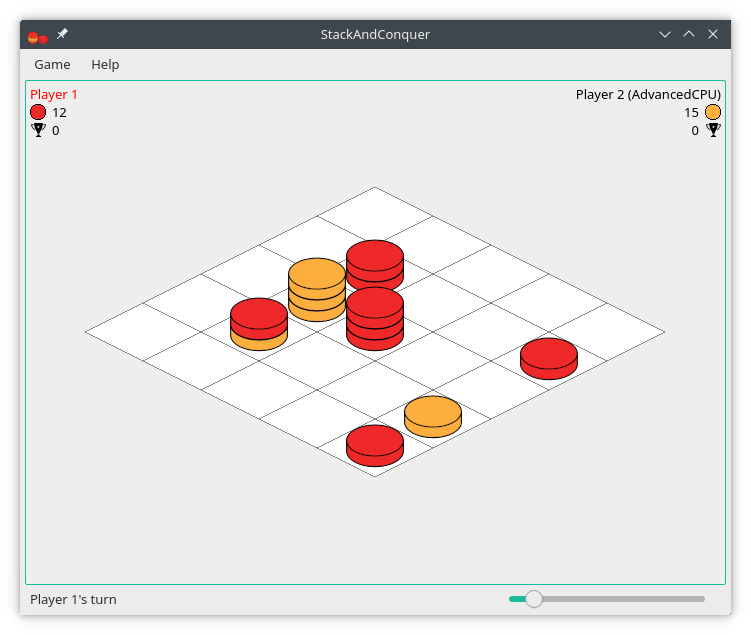

v0.11.1 (06. Jun 2025)
- Add Russian translation - thanks to aaly11!
- CI fixes
StackAndConquer is a challenging tower conquest board game inspired by Mixtour created by Dieter Stein who allows free copying and using the rule texts and graphics under CC license (BY-NC). Objective is to build a stack of stones with at least five stones and a stone with the players color on top.

Please note that the macOS release was created automatically on a build server and has not been tested due to missing hardware. If you encounter any problems, please create an issue.
The rules are included in the game and can be opened through the menu 'Help → Rules'. Additionally the rules can be found on the official Mixtour website:
You can find a manual for creating your own CPU opponent here. Feel free to submit a pull request on Codeberg and your CPU opponent could be included in the next release!
New translations and corrections are highly welcome! You can either fork the source code, make your changes and then create a pull request or you can participate on translate.codeberg.org.